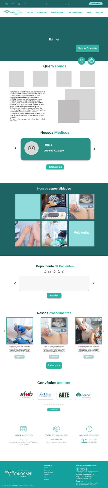

Sistema de passagens
Sistema de Compra de Passagens de Avião
Projeto acadêmico | Programação Orientada a Objetos
mar/2026 – jul/2026
Sistema desenvolvido em TypeScript para a disciplina de POO, simulando o fluxo de compra de passagens aéreas.
PORTFÓLIO
Projetos acadêmicos, de desenvolvimento, inteligência artificial e prototipagem que fizeram parte da minha trajetória.
Projeto acadêmico | Programação Orientada a Objetos
mar/2026 – jul/2026
Sistema desenvolvido em TypeScript para a disciplina de POO, simulando o fluxo de compra de passagens aéreas.
Projeto acadêmico | Inteligência Artificial
mar/2026 – jul/2026
Projeto em Python para classificação automática de resíduos utilizando redes neurais convolucionais.

Scitec Júnior | Prototipagem no Figma
abr/2026 – mai/2026
Protótipo de site para um escritório de arquitetura, desenvolvido no Figma.

Projeto pessoal | Prototipagem no Figma
mar/2026 – mai/2026
Protótipo de site para uma empresa de engenharia civil, desenvolvido no Figma.

Scitec Júnior | Prototipagem no Figma
out/2025 – dez/2025
Protótipo de site responsivo para uma clínica de ginecologia, desenvolvido em versões desktop e mobile.

Scitec Júnior | Prototipagem no Figma
set/2025 – nov/2025
Protótipo inicial para uma startup da área da saúde, desenvolvido em versões desktop e mobile.

Scitec Júnior | Prototipagem no Figma
ago/2024 – nov/2024
Protótipo de site para um escritório de advocacia, desenvolvido em versões desktop e mobile.